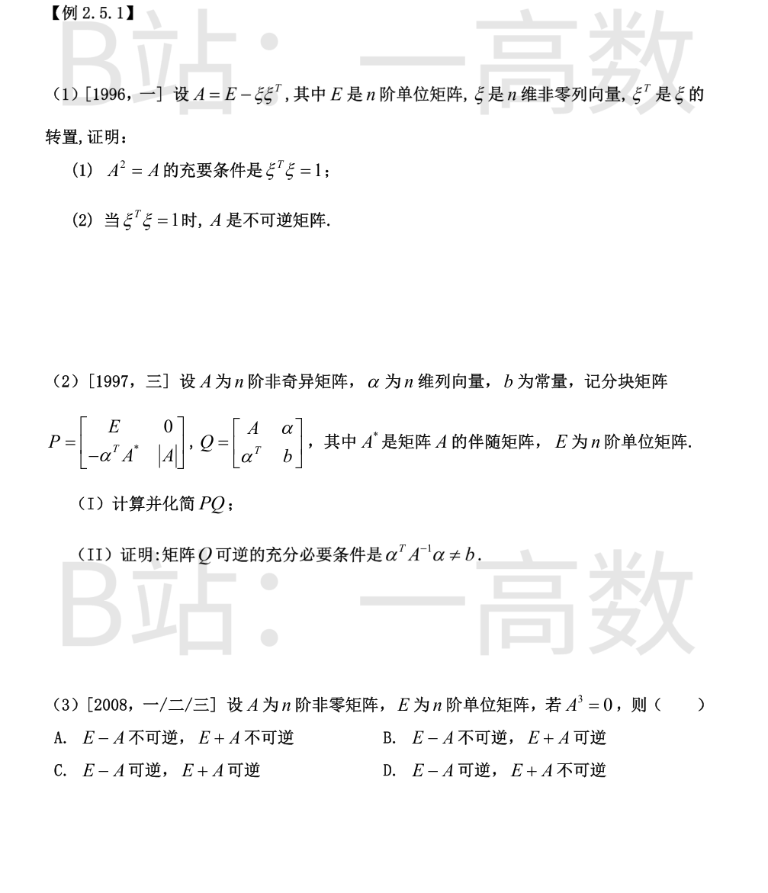
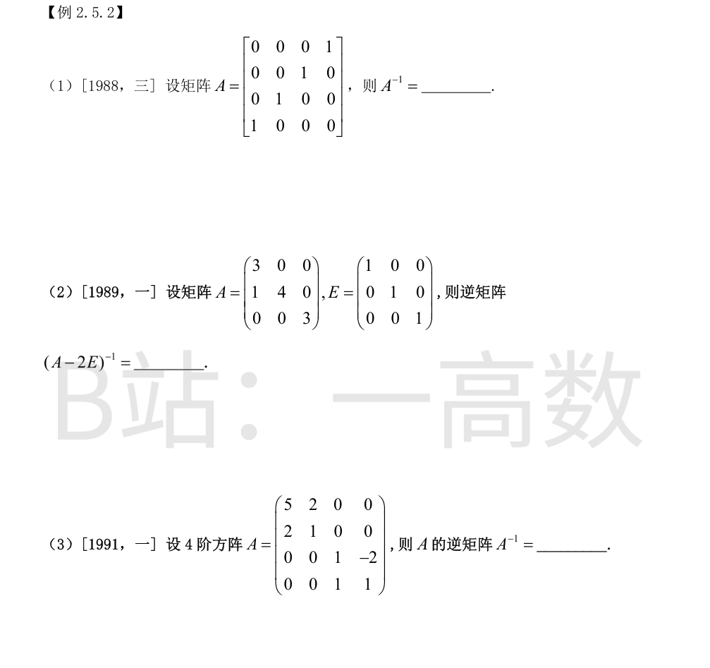
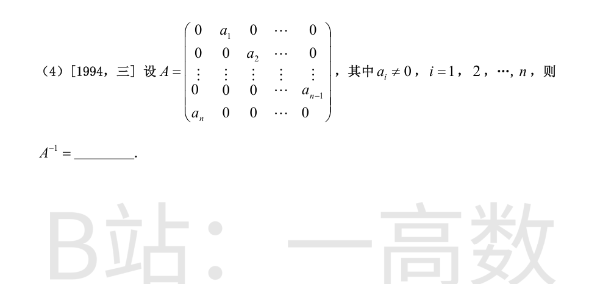
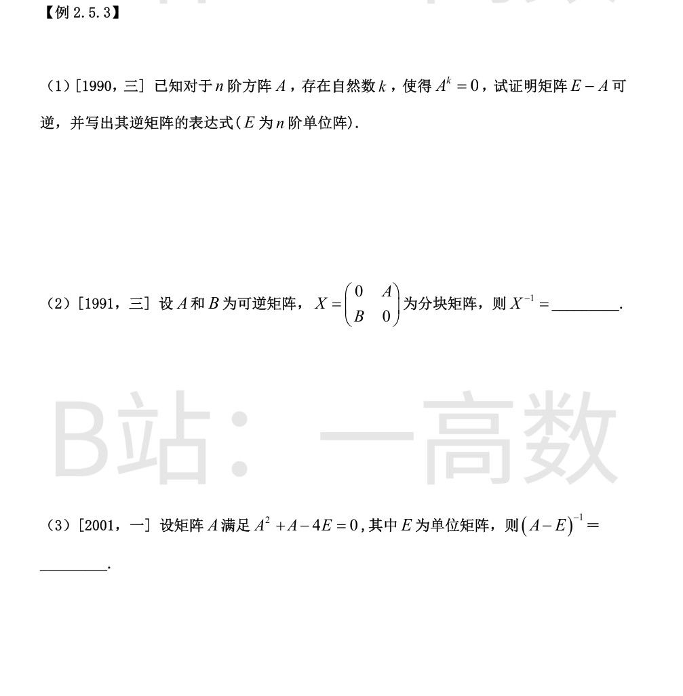
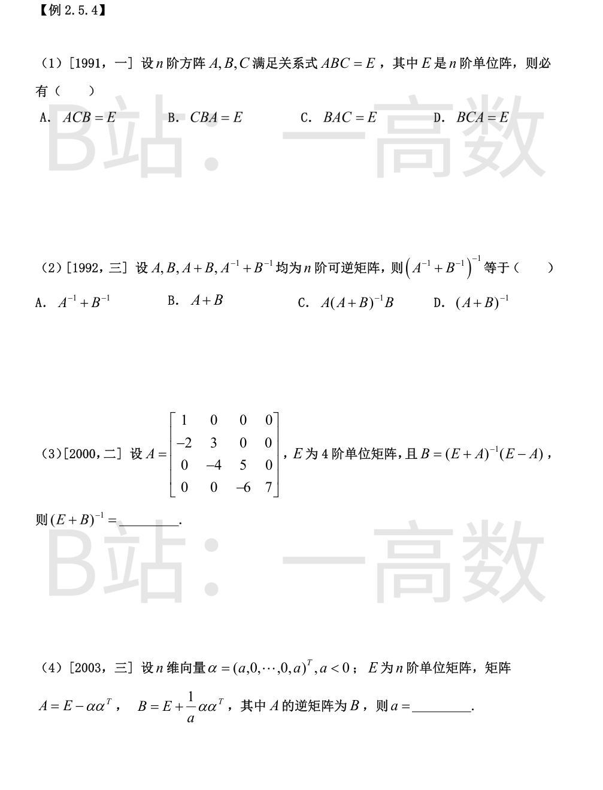
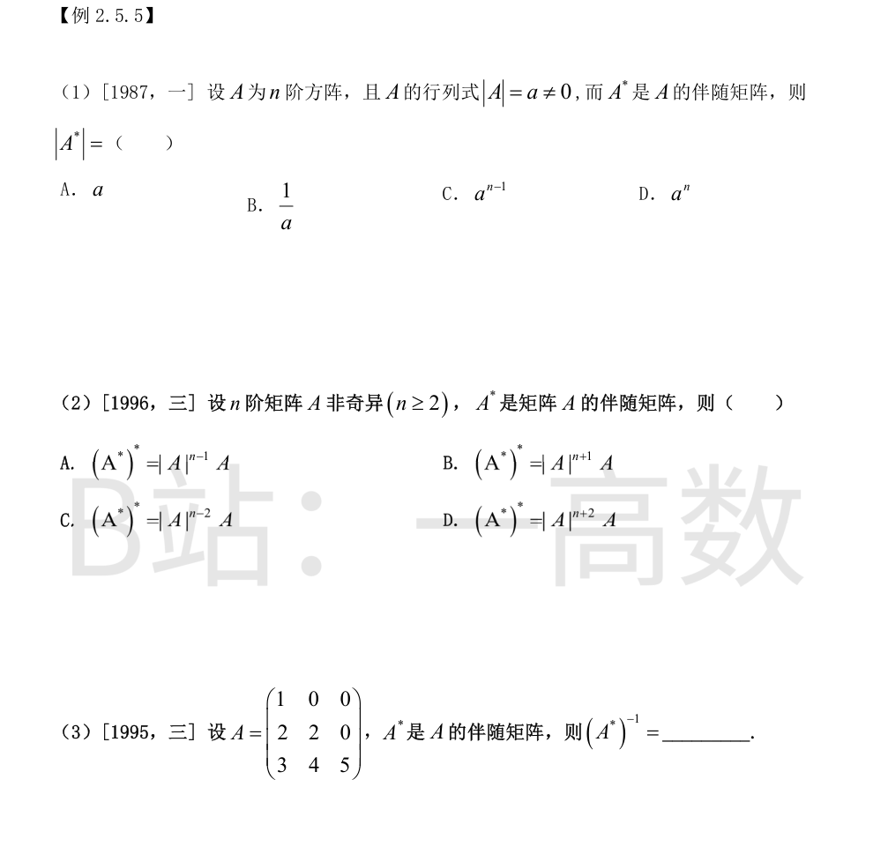

(1) 展开：
$$A^2=(E-\xi\xi^{T})^2=E-2\xi\xi^{T}+\xi(\xi^{T}\xi)\xi^{T}=E-(2-\xi^{T}\xi)\,\xi\xi^{T}.$$
于是
$$A^2=A\iff E-(2-\xi^{T}\xi)\xi\xi^{T}=E-\xi\xi^{T}\iff(1-\xi^{T}\xi)\,\xi\xi^{T}=O.$$
由 ξ\ne0，ξξ^{T}\neO（其对角元含 ξ_i^2>0），故上式 \iff ξ^{T}\xi=1。
(2) 当 ξ^{T}\xi=1 时，Aξ=ξ-ξ(ξ^{T}ξ)=ξ-ξ=0，而 ξ\ne0，即齐次方程组 Ax=0 有非零解，故 A 不可逆。（亦可由 (1) 得 A^2=A，若 A 可逆则左乘 A^{-1} 得 A=E，但 Aξ=0\neξ 矛盾。）
(I) 分块乘法：
$$PQ=\begin{bmatrix}E&0\\-\alpha^{T}A^{*}&|A|\end{bmatrix}\begin{bmatrix}A&\alpha\\\alpha^{T}&b\end{bmatrix}=\begin{bmatrix}A&\alpha\\-\alpha^{T}A^{*}A+|A|\alpha^{T}&-\alpha^{T}A^{*}\alpha+|A|b\end{bmatrix}.$$
左下块：由 A^{*}A=|A|E，得 -|A|α^{T}+|A|α^{T}=O；右下块：由 A^{*}=|A|A^{-1}，得 |A|(b-α^{T}A^{-1}α)。故
$$PQ=\begin{bmatrix}A&\alpha\\O&|A|\,(b-\alpha^{T}A^{-1}\alpha)\end{bmatrix}.$$
(II) P 为分块下三角阵，|P|=|E|\cdot|A|=|A|\ne0，P 可逆。于是
$$Q\ \text{可逆}\iff|Q|\ne0\iff|PQ|\ne0\iff|A|^2\big(b-\alpha^{T}A^{-1}\alpha\big)\ne0\iff\alpha^{T}A^{-1}\alpha\ne b.$$
证毕。
$$(E-A)(E+A+A^2)=E-A^3=E,$$ 故 E-A 可逆；
$$(E+A)(E-A+A^2)=E+A^3=E,$$ 故 E+A 可逆。
两者皆可逆，选 C。


A 是换位（对合）矩阵：Ae_1=e_4，Ae_2=e_3，Ae_3=e_2，Ae_4=e_1，故 A^2=E。由定义即得 A^{-1}=A。
$$A-2E=\begin{pmatrix}1&0&0\\1&2&0\\0&0&1\end{pmatrix}.$$ 设 X=(A-2E)^{-1}，由 (A-2E)X=E 逐行比较：
第一行 (1,0,0) 乘 X 给出 X 的第一行 (1,0,0)；第三行 (0,0,1) 给出 X 的第三行 (0,0,1)；第二行 (1,2) 乘 X 给出 (x_{11}+2x_{21},\ x_{12}+2x_{22},\ x_{13}+2x_{23})=(0,1,0)，解得 (x_{21},x_{22},x_{23})=(-\tfrac12,\tfrac12,0)。故
$$(A-2E)^{-1}=\begin{pmatrix}1&0&0\\-\tfrac12&\tfrac12&0\\0&0&1\end{pmatrix}.$$
验证：(A-2E)(A-2E)^{-1}=\begin{pmatrix}1&0&0\\1-1&1&0\\0&0&1\end{pmatrix}\cdot(\text{调整后})=E，成立。
分块对角 A=diag(A_1,A_2)，其中 A_1=\begin{pmatrix}5&2\\2&1\end{pmatrix}，A_2=\begin{pmatrix}1&-2\\1&1\end{pmatrix}，则 A^{-1}=diag(A_1^{-1},A_2^{-1})。
$$A_1^{-1}=\frac{1}{5\cdot1-2\cdot2}\begin{pmatrix}1&-2\\-2&5\end{pmatrix}=\begin{pmatrix}1&-2\\-2&5\end{pmatrix},\qquad A_2^{-1}=\frac{1}{1+2}\begin{pmatrix}1&2\\-1&1\end{pmatrix}=\begin{pmatrix}\tfrac13&\tfrac23\\-\tfrac13&\tfrac13\end{pmatrix}.$$
故
$$A^{-1}=\begin{pmatrix}1&-2&0&0\\-2&5&0&0\\0&0&\tfrac13&\tfrac23\\0&0&-\tfrac13&\tfrac13\end{pmatrix}.$$
A 的作用：Ae_{i+1}=a_ie_i（i=1,\cdots,n-1），Ae_1=a_ne_n。由 a_i\ne0 知 A 可逆，且
$$A^{-1}e_i=\tfrac{1}{a_i}e_{i+1}\ (i=1,\cdots,n-1),\qquad A^{-1}e_n=\tfrac{1}{a_n}e_1.$$
故 A^{-1} 的 (i+1,i) 元为 1/a_i（i=1,\cdots,n-1），(1,n) 元为 1/a_n，其余为 0：
$$A^{-1}=\begin{pmatrix}0&0&\cdots&0&\tfrac{1}{a_n}\\\tfrac{1}{a_1}&0&\cdots&0&0\\0&\tfrac{1}{a_2}&\cdots&0&0\\\vdots&&\ddots&&\vdots\\0&0&\cdots&\tfrac{1}{a_{n-1}}&0\end{pmatrix}.$$
（可验证 AA^{-1}=A^{-1}A=E。）

直接验证：
$$(E-A)(E+A+A^2+\cdots+A^{k-1})=E-A^k=E,$$
同理 (E+A+\cdots+A^{k-1})(E-A)=E。由逆矩阵定义，E-A 可逆且
$$(E-A)^{-1}=E+A+A^2+\cdots+A^{k-1}.$$
设 X^{-1}=\begin{pmatrix}X_{11}&X_{12}\\X_{21}&X_{22}\end{pmatrix}，由 XX^{-1}=E 得
$$A X_{21}=E,\quad A X_{22}=O,\quad B X_{11}=O,\quad B X_{12}=E.$$
由 A, B 可逆解出 X_{21}=A^{-1}，X_{22}=O，X_{11}=O，X_{12}=B^{-1}；再验证 X^{-1}X=E 亦成立。故
$$X^{-1}=\begin{pmatrix}O&B^{-1}\\A^{-1}&O\end{pmatrix}.$$
由 A^2+A-4E=O 凑因式：
$$(A-E)(A+2E)=A^2+2A-A-2E=A^2+A-2E=2E,$$
故 \big(A-E\big)\cdot\dfrac{A+2E}{2}=E，即
$$(A-E)^{-1}=\dfrac{1}{2}(A+2E).$$

由 ABC=E 知 |A||B||C|=1，A, B, C 均可逆。由 A(BC)=E 得 BC=A^{-1}，右乘 A 得 BCA=E。
（同样可得 CAB=E，但选项未列；ACB、CBA、BAC 因交换乘序一般不成立。）故选 D。
提公因式：
$$A^{-1}+B^{-1}=B^{-1}(A+B)A^{-1}\quad(\text{展开：}B^{-1}AA^{-1}+B^{-1}BA^{-1}=B^{-1}+A^{-1}),$$
故
$$\big(A^{-1}+B^{-1}\big)^{-1}=\big[B^{-1}(A+B)A^{-1}\big]^{-1}=A(A+B)^{-1}B.$$
选 C。（同理由 A^{-1}+B^{-1}=A^{-1}(A+B)B^{-1} 亦得 B(A+B)^{-1}A，由逆的唯一性两者相等。）
由 B=(E+A)^{-1}(E-A)：
$$E+B=(E+A)^{-1}(E+A)+(E+A)^{-1}(E-A)=(E+A)^{-1}\big[(E+A)+(E-A)\big]=2(E+A)^{-1}.$$
故 (E+B)^{-1}=\tfrac12(E+A)。由
$$E+A=\begin{pmatrix}2&0&0&0\\-2&4&0&0\\0&-4&6&0\\0&0&-6&8\end{pmatrix}\ \Rightarrow\ (E+B)^{-1}=\begin{pmatrix}1&0&0&0\\-1&2&0&0\\0&-2&3&0\\0&0&-3&4\end{pmatrix}.$$
由 AB=E：
$$\Big(E-\alpha\alpha^{T}\Big)\Big(E+\tfrac{1}{a}\alpha\alpha^{T}\Big)=E+\Big(\tfrac{1}{a}-1-\tfrac{\alpha^{T}\alpha}{a}\Big)\alpha\alpha^{T}.$$
因 α\ne0（a<0），αα^{T}\neO，故须系数为零：1-a-α^{T}α=0。而 α^{T}α=2a^2，故
$$2a^2=1-a\ \Rightarrow\ 2a^2+a-1=0\ \Rightarrow\ (2a-1)(a+1)=0,$$
得 a=\tfrac12 或 a=-1；由 a<0 得 a=-1。

A^{*}=|A|A^{-1}，两边取行列式：
$$|A^{*}|=\big||A|A^{-1}\big|=|A|^{n}\cdot|A|^{-1}=|A|^{n-1}=a^{n-1}.$$
选 C。
对可逆矩阵 M 有 M^{*}=|M|M^{-1}。由 |A^{*}|=|A|^{n-1}，得
$$(A^{*})^{*}=|A^{*}|\,(A^{*})^{-1}=|A|^{n-1}\cdot\big(|A|A^{-1}\big)^{-1}=|A|^{n-1}\cdot\dfrac{A}{|A|}=|A|^{n-2}A.$$
选 C。
由 A^{*}=|A|A^{-1} 得 (A^{*})^{-1}=\dfrac{A}{|A|}。
A 为下三角阵，|A|=1\cdot2\cdot5=10，故
$$(A^{*})^{-1}=\frac{1}{10}\begin{pmatrix}1&0&0\\2&2&0\\3&4&5\end{pmatrix}=\begin{pmatrix}\tfrac{1}{10}&0&0\\\tfrac{1}{5}&\tfrac{1}{5}&0\\\tfrac{3}{10}&\tfrac{2}{5}&\tfrac{1}{2}\end{pmatrix}.$$